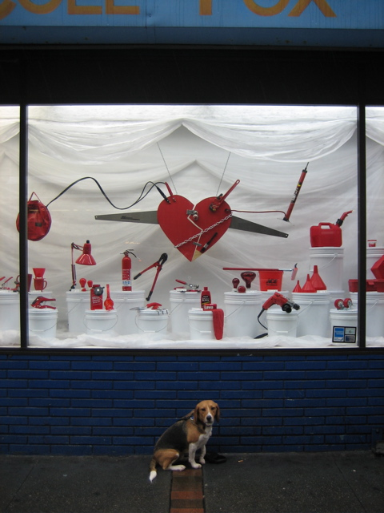

<--Previous
Up
Next-->

Cole Fox Hardware
The branch on Fourth Street, taken during our lunchtime walk on a day when Huxley visited Radar Networks. It was raining hard, but it was our last chance to get the picture before Valentine's Day.